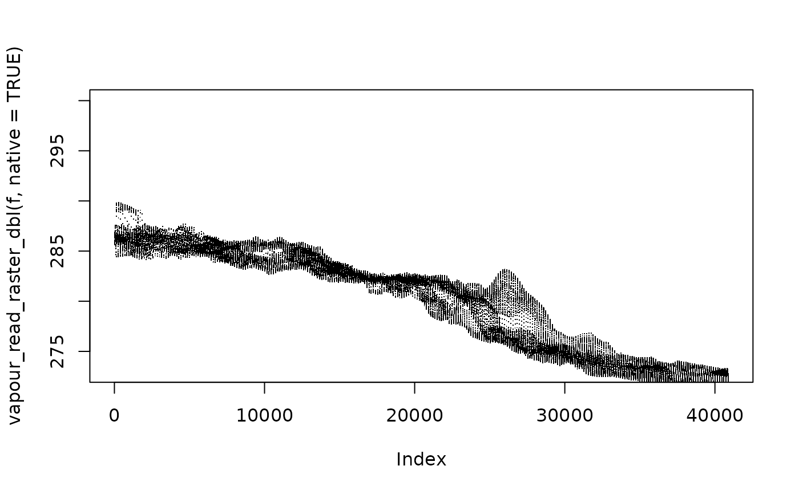

These wrappers around vapour_read_raster() guarantee single vector output of the nominated type.
vapour_read_raster_raw( x, band = 1, window, resample = "nearestneighbour", ..., sds = NULL, native = FALSE, set_na = TRUE ) vapour_read_raster_int( x, band = 1, window, resample = "nearestneighbour", ..., sds = NULL, native = FALSE, set_na = TRUE ) vapour_read_raster_dbl( x, band = 1, window, resample = "nearestneighbour", ..., sds = NULL, native = FALSE, set_na = TRUE ) vapour_read_raster_chr( x, band = 1, window, resample = "nearestneighbour", ..., sds = NULL, native = FALSE, set_na = TRUE ) vapour_read_raster_hex( x, band = 1, window, resample = "nearestneighbour", ..., sds = NULL, native = FALSE, set_na = TRUE )
| x | data source |
|---|---|
| band | index of which band to read (1-based) |
| window | src_offset, src_dim, out_dim |
| resample | resampling method used (see details) |
| ... | reserved |
| sds | index of subdataset to read (usually 1) |
| native | apply the full native window for read, |
| set_na | specify whether NA values should be set for the NODATA |
atomic vector of the nominated type raw, int, dbl, or character (hex)
_hex and _chr are aliases of each other.
f <- system.file("extdata", "sst.tif", package = "vapour") vapour_read_raster_int(f, window = c(0, 0, 5, 4)) #> [1] 286 286 286 286 286 286 286 286 286 286 286 286 286 286 286 286 286 286 286 #> [20] 286 vapour_read_raster_raw(f, window = c(0, 0, 5, 4)) #> [1] ff ff ff ff ff ff ff ff ff ff ff ff ff ff ff ff ff ff ff ff vapour_read_raster_chr(f, window = c(0, 0, 5, 4)) #> [1] "#FFFFFF" "#FFFFFF" "#FFFFFF" "#FFFFFF" "#FFFFFF" "#FFFFFF" "#FFFFFF" #> [8] "#FFFFFF" "#FFFFFF" "#FFFFFF" "#FFFFFF" "#FFFFFF" "#FFFFFF" "#FFFFFF" #> [15] "#FFFFFF" "#FFFFFF" "#FFFFFF" "#FFFFFF" "#FFFFFF" "#FFFFFF" plot(vapour_read_raster_dbl(f, native = TRUE), pch = ".", ylim = c(273, 300)) 